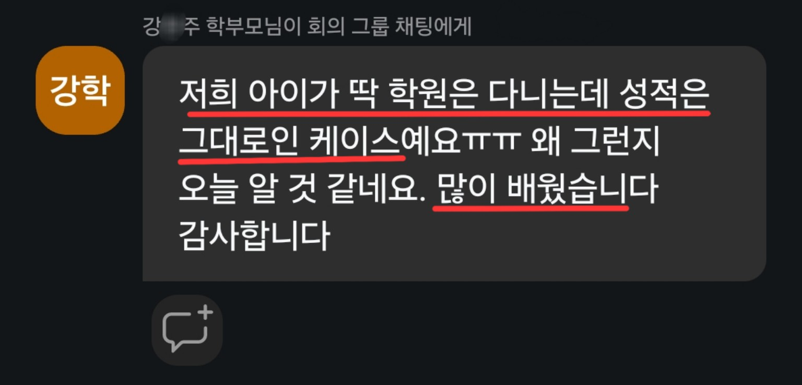
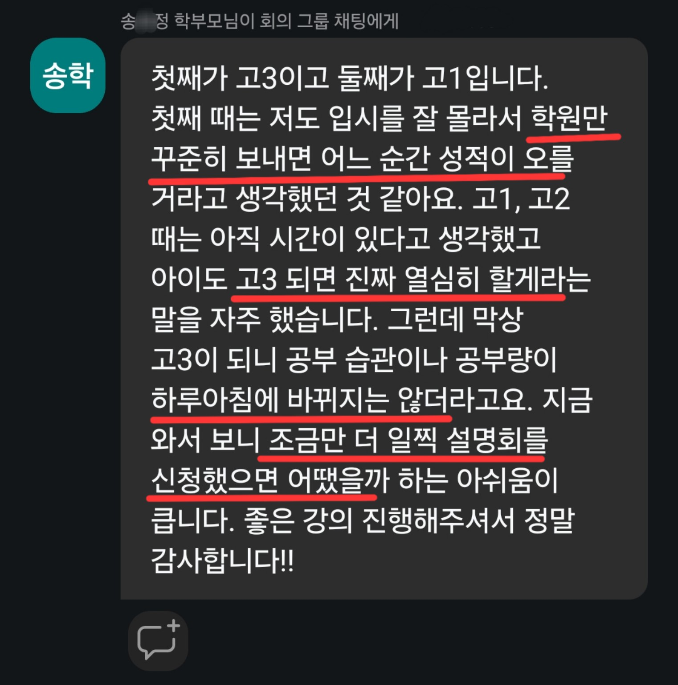
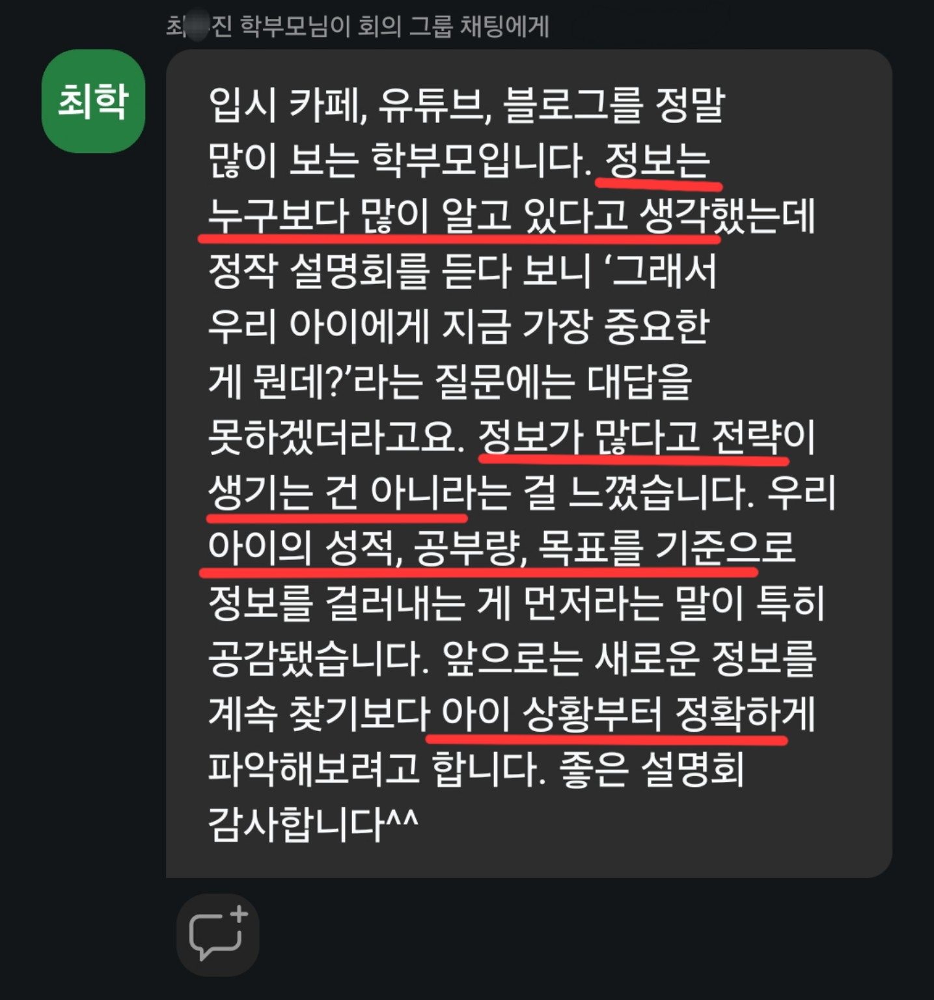

설명회 전에
이 이야기만 먼저
읽어주세요.
안녕하세요. 진지환입니다.
이번 무료 설명회를 신청하신 학부모님이라면 아마 비슷한 고민을 한 번쯤 해보셨을 겁니다. 아이가 아예 공부를 안 하는 것은 아닌데 성적이 잘 오르지 않거나, 학원도 다니고 인강도 듣는데 시험 결과는 계속 비슷하고, 무엇을 더 시켜야 할지 몰라 답답한 경우입니다.
저는 중하위권 학생들을 지도하면서 이 문제를 꽤 오래 봐왔습니다. 그리고 한 가지를 분명하게 느꼈습니다. 중하위권 학생이라고 해서 모두 같은 이유로 성적이 낮은 것은 아닙니다.
가장 단순하지만 가장 자주 놓치는 이유는 공부량 자체가 부족한 경우입니다. 실제로 성적을 올리려면 강의를 듣는 시간만이 아니라, 혼자 문제를 풀고, 틀린 문제를 다시 보고, 외워야 할 것을 반복하는 시간이 필요합니다. 그런데 학원과 인강으로 하루가 꽉 차 있으면 겉보기에는 공부를 많이 하는 것 같아도 정작 성적을 만드는 자기 공부량은 부족할 수 있습니다.
그리고 공부량이 부족한 학생 중 상당수는 단순히 시간이 없는 것이 아니라 실행력이 부족한 상태에 있습니다. 계획은 세우지만 시작하지 못하고, 해야 할 양을 알고 있어도 며칠 이상 이어지지 않으며, 시험이 가까워졌을 때야 급하게 공부량을 늘립니다.
반대로 공부시간은 적지 않은데도 성적이 오르지 않는 학생도 있습니다. 이런 경우에는 무엇을 공부할지, 어느 과목에 시간을 더 써야 할지, 지금 수준에서 어떤 문제집과 강의를 선택해야 할지 같은 공부 방향의 문제를 봐야 합니다.
“공부량 → 실행력 → 공부 방향”의 순서로 확인합니다.
공부량이 절대적으로 부족한데 공부법만 바꿔서는 성적이 오르기 어렵습니다. 반대로 해야 할 공부를 알고 있어도 실제로 매일 하지 못한다면 계획은 의미가 없습니다. 그리고 충분히 실행하고 있는데도 결과가 나오지 않는다면, 그때는 공부의 방향과 우선순위를 점검해야 합니다.
그래서 저는 처음부터 “더 좋은 공부법이 무엇인가?”를 묻기보다, “실제로 얼마나 공부하고 있는가?”, “그 공부가 매일 실행되고 있는가?”, “그 다음에 방향이 맞는가?”를 봅니다.
이번 설명회에서 이야기하려는 것도 바로 이것입니다.
이번 설명회는 공부법 몇 가지를 빠르게 알려드리는 자리가 아닙니다. 중하위권 학생들이 왜 현재 성적대에 머물러 있는지, 공부량이 부족한 경우부터 실행이 이어지지 않는 경우, 그리고 열심히 하는데도 공부 방향이 잘못된 경우까지 나누어 보려고 합니다.
설명회를 듣고 난 뒤에는 적어도 “우리 아이는 지금 어디에서 막혀 있는지”, 그리고 “앞으로 무엇부터 바꿔야 하는지” 판단할 수 있게 만드는 것이 목표입니다.
학생에게 무조건 더 열심히 하라고 말하는 것과 실제로 필요한 공부량을 계산해서 매일 실행하도록 만드는 것은 완전히 다른 일입니다. 중하위권에게는 막연한 의지보다 구체적인 행동 기준이 필요합니다.







저 역시 처음부터 공부를 잘했던 학생은 아니었습니다.

3월 모의고사 74명 중 60등 → 최고 3등
과학고 조기졸업 · POSTECH 재학
2023년 이후 중하위권·노베이스 학생 지도
『초압축 실전 공부법』 저자
매일공부매니저 대표 겸 강사
저 역시 고등학교에서 처음부터 좋은 성적을 받았던 학생은 아닙니다. 3월 모의고사에서 74명 중 60등으로 시작했고, 이후 공부 방식을 바꾸면서 최고 3등까지 성적을 올렸습니다. 이후 과학고를 조기졸업했고 현재는 포항공과대학교에 재학하고 있습니다.
이 과정에서 제가 가장 크게 느낀 것은 좋은 강의를 하나 더 찾는 것보다 실제로 필요한 공부량을 채우고, 그것을 매일 실행하는 힘이 먼저라는 점이었습니다. 그 다음에야 공부법과 입시전략이 힘을 발휘합니다.
조기졸업 이후에는 특히 중하위권과 노베이스 학생들을 많이 지도해왔습니다. 공부가 계속 막혀 있는 학생이 어디에서 멈추는지, 그리고 실제로 무엇을 바꿔야 다시 성적이 움직이기 시작하는지를 보는 일에 집중해왔습니다.
매일공부매니저를 만든 이유도 이 때문입니다.
학생을 지도하다 보면 “무엇을 해야 하는지 아는 것”과 “그걸 실제로 매일 하는 것” 사이에 큰 차이가 있다는 것을 자주 보게 됩니다.
상담을 받을 때는 이해합니다. 계획도 세웁니다. 그런데 며칠 뒤에는 다시 예전 방식으로 돌아가는 경우가 많습니다. 계획한 공부량을 채우지 못하고, 해야 할 공부보다 당장 하기 편한 공부를 먼저 하게 됩니다.
그래서 매일공부매니저에서는 현재 수준과 목표에 따라 필요한 공부 방향을 잡는 것에서 끝내지 않고, 매일 어느 정도의 공부량을 실제로 채웠는지, 계획한 공부를 실행했는지까지 관리합니다. 그리고 진행 상황을 보면서 필요할 때 계획과 공부 방향을 다시 조정합니다.
다만 이번 무료 설명회의 목적은 매일공부매니저를 판매하는 데 있지 않습니다. 우선은 설명회를 통해 우리 아이의 성적이 오르지 않는 핵심 원인이 무엇인지 이해하는 것이 먼저라고 생각합니다.
만약 설명회를 들은 뒤 “공부량이 부족한 것은 알겠는데 혼자서는 꾸준히 시키기 어렵다”거나, “계획은 세울 수 있지만 실제 실행을 관리하기 어렵다”고 느끼신다면, 그때 매일공부매니저가 어떤 방식으로 도움을 줄 수 있는지 살펴보셔도 늦지 않습니다.
설명회를 들으실 때 세 가지만 생각해보시면 좋겠습니다.
첫째, 우리 아이가 성적을 올리기에 필요한 공부량을 실제로 하고 있는가.
둘째, 계획한 공부가 하루 이틀이 아니라 매일 실행되고 있는가.
셋째, 충분히 실행하고 있다면 지금 공부의 방향과 우선순위가 맞는가.
어디에서 가장 먼저 막혀 있을까?”
설명회에서 이 질문부터 함께 풀어보겠습니다.
설명회에서 꼭 듣고 싶은 내용이 있나요?
학생의 현재 상황이나 평소 궁금했던 점을 몇 줄만 적어주세요. 미리 보내주신 내용을 보고 실제 설명회 구성과 질의응답에 최대한 반영하겠습니다.
설명회 이후에도 중하위권 공부법과 입시 정보를 계속 받아보고 싶다면
인스타그램을 팔로우해주세요.
dm으로 궁금한 점 연락 주셔도 됩니다.
설명회 접속 안내는 신청하실 때 입력하신 연락처로 별도 안내드리겠습니다.